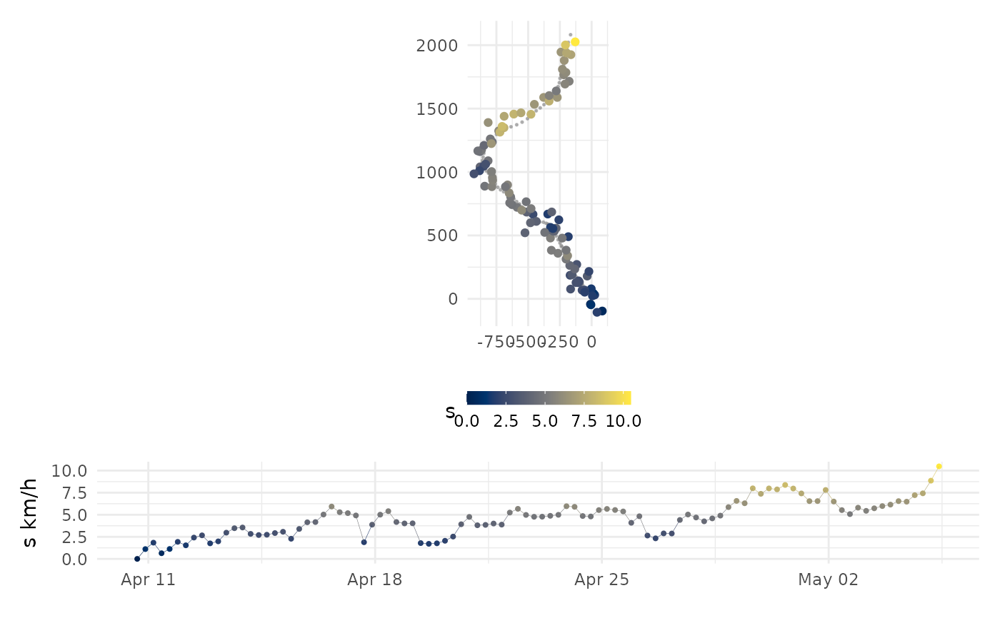

visualize simulated tracks from a fG_sim data.frame
# S3 method for fG_sim plot(x, error = FALSE, pal = "Zissou1", rev = FALSE, col = TRUE, ...)
| x | a |
|---|---|
| error | logical, plot locations with error (TRUE) or without. Ignored in 1-D time-series plots |
| pal | hcl.colors palette to use (default: "Zissou1"); type |
| rev | reverse direction of colour palette; logical (default = FALSE) |
| col | colour data points by speed; logical (default = TRUE) |
| ... | additional arguments to be ignored |
Plots of simulated tracks. Can be rendered all on a single page (pages = 1) or on separate pages (pages = 0).
tr <- sim(N=100, model = "crw") plot(tr, error = TRUE) 